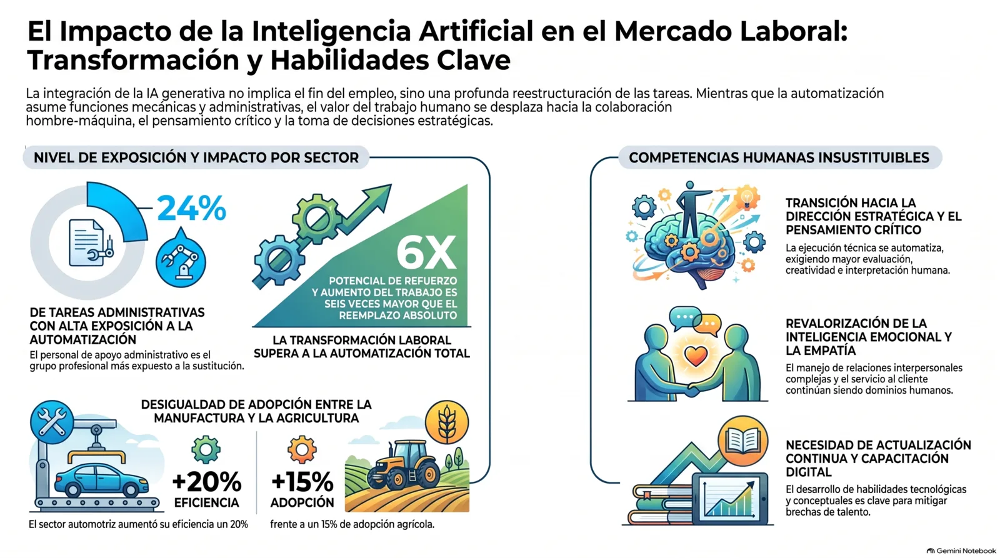

Existe un pánico generalizado en Internet sobre cómo la inteligencia artificial va a destruir todos los empleos. Pero al mirar los datos reales, la realidad es otra y es fascinante: no estamos ante un apocalipsis laboral, sino ante la mayor reconfiguración de tareas de la historia moderna.
Lo que dicen los datos.
La Organización Internacional del Trabajo (OIT) demostró que el potencial de la IA para potenciar y transformar el trabajo humano es casi seis veces mayor que el de reemplazarlo: un 13% de impacto de refuerzo frente a un 2,3% de automatización pura. [1][6]
De la ejecución técnica al liderazgo conceptual.
El trabajo rutinario se automatiza para liberar el cerebro para lo que mejor sabemos hacer: crear, pensar críticamente y liderar. [1]
- En el sector creativo: la IA generativa puede automatizar hasta un 26% de las funciones repetitivas en diseño, arte y medios. De hecho, el 75% de los profesionales creativos ya la usa como herramienta facilitadora para investigación y edición. El centro de gravedad cambió: ya no se trata de pasar diez horas ajustando un software, sino de dominar el pensamiento estratégico y la dirección de ideas. [2]
- En industrias tradicionales y servicios: en el sector legal, el LegalTech y los algoritmos optimizan la gestión de contratos y casos, y desplazan la labor humana hacia el juicio ético y la auditoría. En manufactura y logística, la eficiencia operativa sube hasta un 20% en automoción y los tiempos de entrega bajan un 30% con analítica predictiva. [4][5]
El verdadero superpoder: la adaptabilidad humana.
Las profesiones no están desapareciendo; están cambiando de nivel. Las tareas administrativas de apoyo son las más expuestas a la automatización de procesos básicos. Por eso, quedarse haciendo exactamente lo mismo que hace cinco años es el único riesgo real. [3][8]
Se estima que más de 120 millones de trabajadores necesitan actualizar sus habilidades (reskilling) para adaptarse a esta nueva era. [3] Las competencias indispensables:
- Pensamiento crítico y juicio ético: evaluar lo que genera la máquina.
- Interacción con modelos (prompt engineering): saber comunicarnos con claridad mediante lenguaje natural.
- Inteligencia emocional y liderazgo: habilidades puramente humanas e insustituibles. [7][8]
El mensaje es claro.
La IA no va a reemplazar a los humanos. Pero los humanos que aprendan a usar IA van a reemplazar a los que no lo hagan. La tecnología es un copiloto increíble, pero el capitán de tu carrera sigues siendo tú.
El futuro pertenece a quienes toman la iniciativa hoy.
— Jacques Hauzeur
Nunca pares de aprender.
Bibliografía.
- OIT — Generative AI and jobs: a global analysis of potential effects on job quantity and quality (ILO Working Paper 96, 2023).
- UOC — Cómo la IA cambia profesiones como el diseño, el arte o los medios.
- Infobae Tecno — La IA reconfigura miles de empleos y desafía las competencias tradicionales.
- AIEP — Cómo la inteligencia artificial está transformando el trabajo.
- Derecho y Realidad (UPTC) — La IA en el sector legal: análisis comparativo con España.
- RIMI — El impacto de la inteligencia artificial en el mercado laboral.
- OTRS — Las habilidades más importantes para la era de la IA.
- Blog Coomeva — Inteligencia artificial en el trabajo: el futuro de las profesiones.
- Coderhouse — Integrar IA en el trabajo: guía paso a paso sin código.